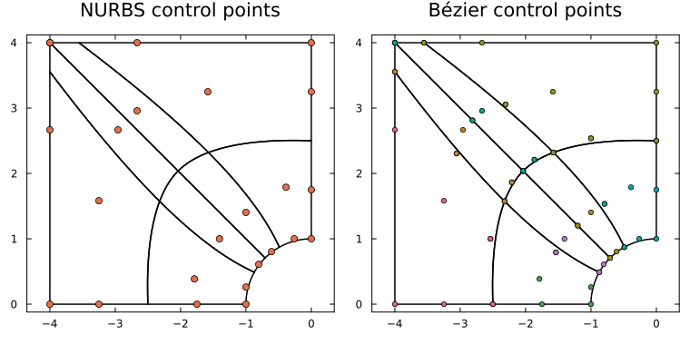

BezierGrid
A finite element code such as Ferrite evaluates the shape functions element by element: the shape functions are defined once on a reference element, and are mapped to each element of the grid. Spline basis functions do not fit directly into this structure. A B-spline basis function of degree $p$ is non-zero on up to $p + 1$ neighboring elements, and its restriction to an element depends on the knot vector around that element, so the basis functions differ from element to element.
FerriteIGA bridges this gap with Bézier extraction [4]. On each element, the spline basis is written as a linear combination of Bernstein polynomials, which are the same on every element and can therefore be handled as standard reference shape functions. The element specific information is collected in a small matrix per element, the Bézier extraction operator. The BezierGrid is a Ferrite grid which, in addition to the cells and nodes, stores these operators and the NURBS weights.
This topic guide first describes Bézier extraction, and then the BezierGrid data structure. How the operators are used to evaluate the basis functions is described in the BezierCellValues topic guide.
Bézier extraction
B-splines
Consider a single element $e$ of a B-spline patch of degree $p$, i.e. a knot span. On this element, exactly $n_\mathrm{en} = (p + 1)^d$ B-spline basis functions are non-zero, which are collected in the vector $\boldsymbol{N}^e(\boldsymbol{\xi})$. Each of them is a polynomial of degree $p$ on the element, and can therefore be written as a linear combination of the $(p + 1)^d$ Bernstein polynomials $\boldsymbol{B}(\boldsymbol{\xi})$ of degree $p$ on the reference element $[-1, 1]^d$. In matrix form,
\[\boldsymbol{N}^e(\boldsymbol{\xi}) = \boldsymbol{C}^e \boldsymbol{B}(\boldsymbol{\xi}),\]
where $\boldsymbol{C}^e$ is the $n_\mathrm{en} \times n_\mathrm{en}$ Bézier extraction operator of element $e$. The Bernstein polynomials $\boldsymbol{B}$ are the same for all elements; all information about the knot vector is contained in $\boldsymbol{C}^e$.
As an example, consider the quadratic basis with knot vector $\Xi = [-1, -1, -1, -0.5, 0, 0.5, 1, 1, 1]$, which has four elements. The extraction operators of the first two elements are
mesh = generate_nurbs_patch(:line, (4,), 2; size = (1.0,))
grid = BezierGrid(mesh)
mesh.knot_vectors[1]9-element Vector{Float64}:
-1.0
-1.0
-1.0
-0.5
0.0
0.5
1.0
1.0
1.0extraction_matrix(get_extraction_operator(grid, 1))3×3 Matrix{Float64}:
1.0 0.0 0.0
0.0 0.5 0.0
0.0 0.5 1.0extraction_matrix(get_extraction_operator(grid, 2))3×3 Matrix{Float64}:
0.5 0.0 0.0
0.0 0.5 0.0
0.5 0.5 1.0Each row corresponds to a B-spline basis function on the element, and each column to a Bernstein polynomial. The rows are ordered as the nodes of the cell, i.e. the end points first, followed by the interior (see The BezierGrid data structure below).
The operators are computed from the knot vectors with an algorithm based on knot insertion: inserting every interior knot until it has multiplicity $p$ turns the B-spline basis into a $C^0$ Bernstein (Bézier) basis on each element, and the coefficients of the insertions give $\boldsymbol{C}^e$ [4]. For surfaces and solids, the operator is the Kronecker product of the univariate operators in each parametric direction. The operators are sparse, and are stored as such in a BezierExtractionOperator.
NURBS
For a NURBS patch, the basis functions on element $e$ are
\[\boldsymbol{R}^e(\boldsymbol{\xi}) = \frac{\boldsymbol{W}^e \boldsymbol{N}^e(\boldsymbol{\xi})}{W(\boldsymbol{\xi})} = \frac{\boldsymbol{W}^e \boldsymbol{C}^e \boldsymbol{B}(\boldsymbol{\xi})}{W(\boldsymbol{\xi})},\]
where $\boldsymbol{W}^e = \operatorname{diag}(w_1, \ldots, w_{n_\mathrm{en}})$ contains the NURBS weights of the control points of the element, and the weight function is
\[W(\boldsymbol{\xi}) = \sum_{A=1}^{n_\mathrm{en}} w_A N^e_A(\boldsymbol{\xi}) = \sum_{a=1}^{n_\mathrm{en}} w^b_a B_a(\boldsymbol{\xi}), \qquad \boldsymbol{w}^b = (\boldsymbol{C}^e)^\mathrm{T} \boldsymbol{w}.\]
The Bézier weights $\boldsymbol{w}^b$ express the weight function in the Bernstein basis. In the same way, the geometry of the element can be written in terms of the Bernstein polynomials,
\[\boldsymbol{x}(\boldsymbol{\xi}) = \sum_{A=1}^{n_\mathrm{en}} R^e_A(\boldsymbol{\xi}) \boldsymbol{X}_A = \frac{\sum_{a=1}^{n_\mathrm{en}} w^b_a B_a(\boldsymbol{\xi}) \boldsymbol{X}^b_a}{\sum_{a=1}^{n_\mathrm{en}} w^b_a B_a(\boldsymbol{\xi})}, \qquad w^b_a \boldsymbol{X}^b_a = \sum_{A=1}^{n_\mathrm{en}} C^e_{Aa} w_A \boldsymbol{X}_A,\]
where $\boldsymbol{X}^b_a$ are the Bézier control points of the element. Each element is thus a rational Bézier element, completely described by its own Bézier control points and weights, independent of the neighboring elements. In contrast to the NURBS control points, which are shared between elements, the Bézier control points are local to each element. The figure shows the NURBS control points (left) and the Bézier control points of each element (right) of a coarse plate with a hole.
grid = BezierGrid(generate_nurbs_patch(:plate_with_hole, (4, 2), 2))
X = [node.x for node in grid.nodes]
fig1 = plot_cells!(plot(; aspect_ratio = :equal, title = "NURBS control points"), grid)
scatter!(fig1, first.(X), last.(X); color = 2, label = "")
fig2 = plot_cells!(plot(; aspect_ratio = :equal, title = "Bézier control points"), grid)
for cellid in 1:getncells(grid)
xb, wb, x, w = get_bezier_coordinates(grid, cellid)
scatter!(fig2, first.(xb), last.(xb); color = cellid + 2, markersize = 3, label = "")
end
plot(fig1, fig2; layout = (1, 2), size = (760, 380))
The BezierGrid data structure
A BezierGrid is created from a NURBSMesh with BezierGrid(mesh). It is a subtype of Ferrite.AbstractGrid, and wraps a standard Ferrite.Grid with
- nodes: one
Nodefor each control point, at the position of the control point, - cells: one
BezierCellfor each element (non-empty knot span),
and additionally stores
- weights: the NURBS weight of each control point (node),
- extraction operators: one
BezierExtractionOperatorfor each cell.
mesh = generate_nurbs_patch(:plate_with_hole, (4, 2), 2)
grid = BezierGrid(mesh)BezierGrid{2, BezierCell{RefQuadrilateral, 2, 9}, Float64} with 8 BezierCell{RefQuadrilateral, 2, 9} cells and 24 nodes (contorl points)A BezierCell{refshape, order} has (order + 1)^dim nodes: the control points of all basis functions that are non-zero on the cell. They are ordered like the Bernstein polynomials of the IGAInterpolation: first the vertices, then the edges, faces and the interior, analogous to Lagrange cells in Ferrite.
getcells(grid, 1)BezierCell{RefQuadrilateral, 2, 9}((1, 3, 15, 13, 2, 9, 14, 7, 8))Since the basis functions extend over several elements, neighboring cells share several layers of nodes, not only the nodes on their common facet. For example, the first two cells share six control points:
intersect(getcells(grid, 1).nodes, getcells(grid, 2).nodes)6-element Vector{Int64}:
3
15
2
9
14
8When a field is added to a DofHandler with an IGAInterpolation, all degrees of freedom of a cell are associated with its nodes (the control points). Cells that share a control point therefore share the corresponding degrees of freedom, which is how the continuity of the spline basis is carried over to the global system. Otherwise, the DofHandler works exactly as for standard Ferrite grids, including for vector fields and multiple fields.
Cell coordinates
In a standard Ferrite program, getcoordinates(grid, cellid) returns the coordinates of the nodes of the cell, which are needed to reinit! the CellValues. For a BezierGrid, getcoordinates instead returns a BezierCoords, which contains all the data needed for an isogeometric cell:
coords = getcoordinates(grid, 1)
propertynames(coords)(:xb, :wb, :x, :w, :beo)coords.xandcoords.w: the NURBS control points and weights,coords.xbandcoords.wb: the Bézier control points and weights,coords.beo: the Bézier extraction operator.
This object is passed directly to reinit!, see the BezierCellValues topic guide. A pre-allocated BezierCoords can be updated in-place with getcoordinates!(coords, grid, cellid), which is also what the IGACellCache does.
The individual parts can also be obtained with get_nurbs_coordinates, get_nurbs_weights, get_bezier_coordinates and get_extraction_operator (and the in-place versions get_nurbs_weights! and get_bezier_coordinates!):
xb, wb, x, w = get_bezier_coordinates(grid, 1)
wb9-element Vector{Float64}:
1.0
0.86982523608291
0.9674563090207275
1.0
0.9023689270621825
0.934912618041455
0.9755922317655457
1.0
0.9511844635310913Standard Ferrite grids and mixed grids
A standard Ferrite Grid can be wrapped in a BezierGrid with BezierGrid(grid). The weights are then all one, and the cells have no extraction operator (nothing). More generally, a BezierGrid can be created from its parts with BezierGrid(cells, nodes, weights, extraction_operators), where the extraction operator of a non-isogeometric cell is nothing. This makes it possible to combine isogeometric and standard finite element cells in a single grid, with one SubDofHandler per cell type.